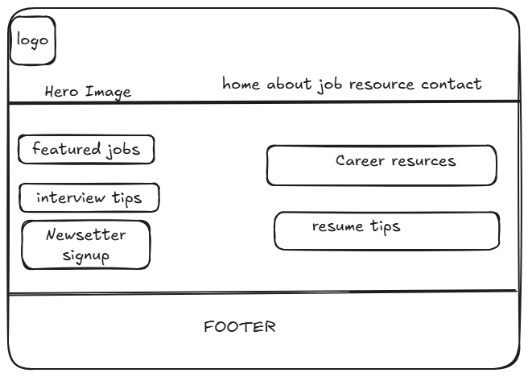
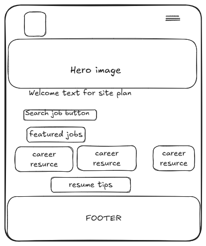

Site Name
Remote Career Hub
The name Remote Career Hub was selected because it clearly represents a website dedicated to helping people find remote jobs and build successful careers. The site will provide job opportunities, career resources, resume guidance, interview preparation, and other tools to help job seekers succeed in today's remote workforce.
Optional Domain: remotecareerhub.org
Site Purpose
The purpose of this website is to provide a central resource for people seeking remote employment opportunities. Visitors will be able to browse remote job listings, learn how to create professional resumes and cover letters, prepare for interviews, explore career development resources, and contact the site for additional career support.
Scenarios
- Where can I find entry-level remote jobs that match my skills and experience?
- How can I improve my resume so it passes Applicant Tracking Systems (ATS)?
- What are some common interview questions for remote customer support jobs?
- Where can I learn the skills employers expect for remote positions?
Color Scheme
| Color | Hex Code | Usage |
|---|---|---|
| Navy Blue | #1E3A8A | Header, Navigation, Headings, Footer |
| Orange | #F97316 | Buttons, Links, Call-to-Action Sections |
| White | #FFFFFF | Main Background |
| Light Gray | #F4F4F4 | Cards and Section Backgrounds |
| Dark Gray | #333333 | Paragraph Text |
Typography
Poppins
Poppins will be used for the website logo, headings, navigation menu, and buttons because it provides a clean, modern, and professional appearance.
Roboto
Roboto will be used for paragraphs, forms, tables, and general body text because it is highly readable on both desktop and mobile devices.
Wireframes
Desktop View

Mobile View
